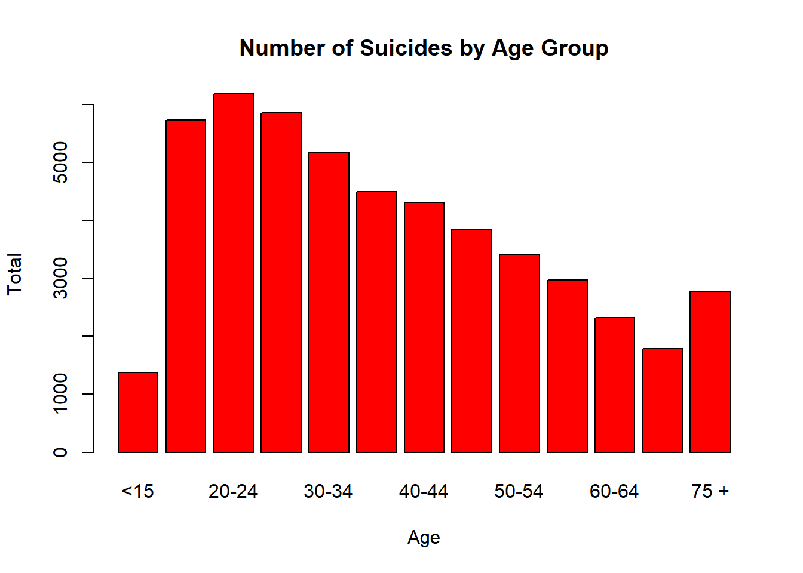
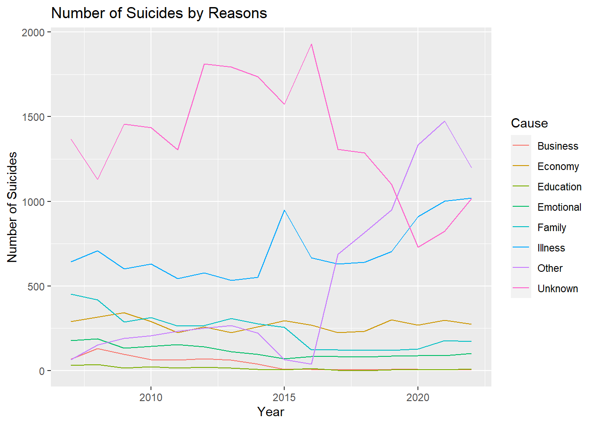
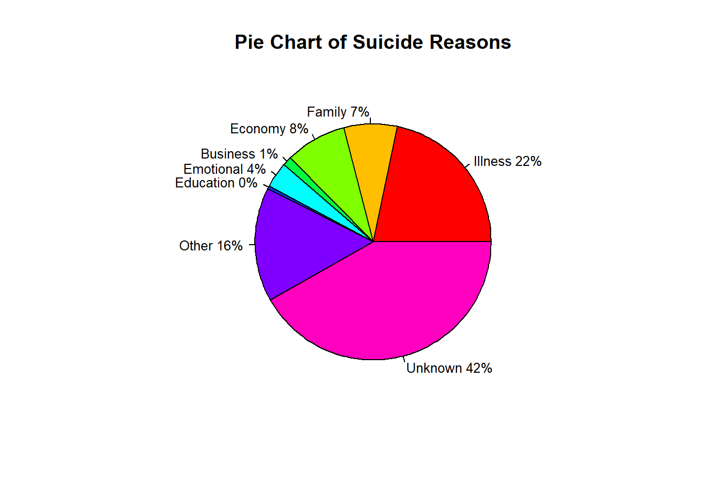
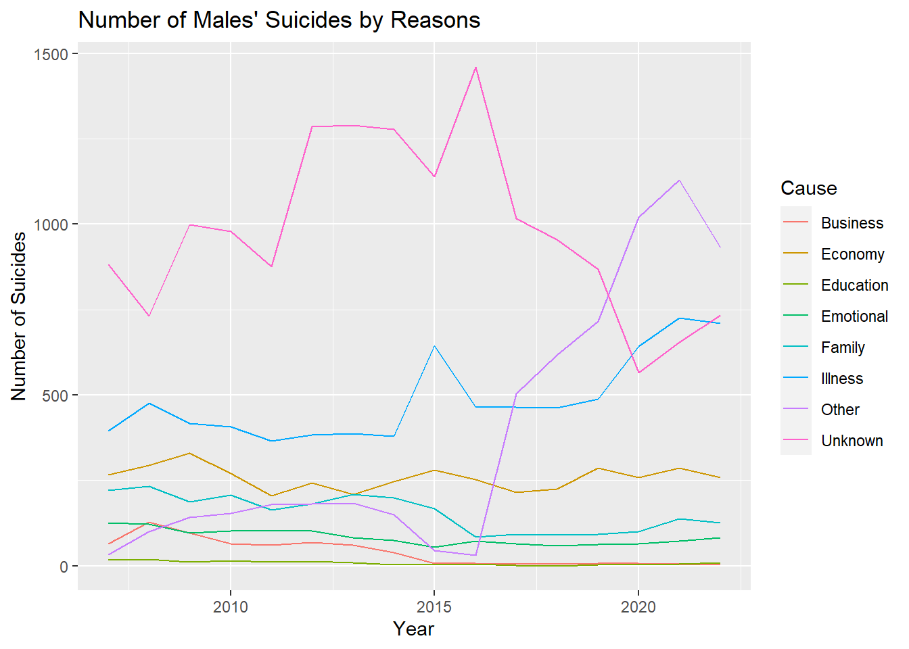
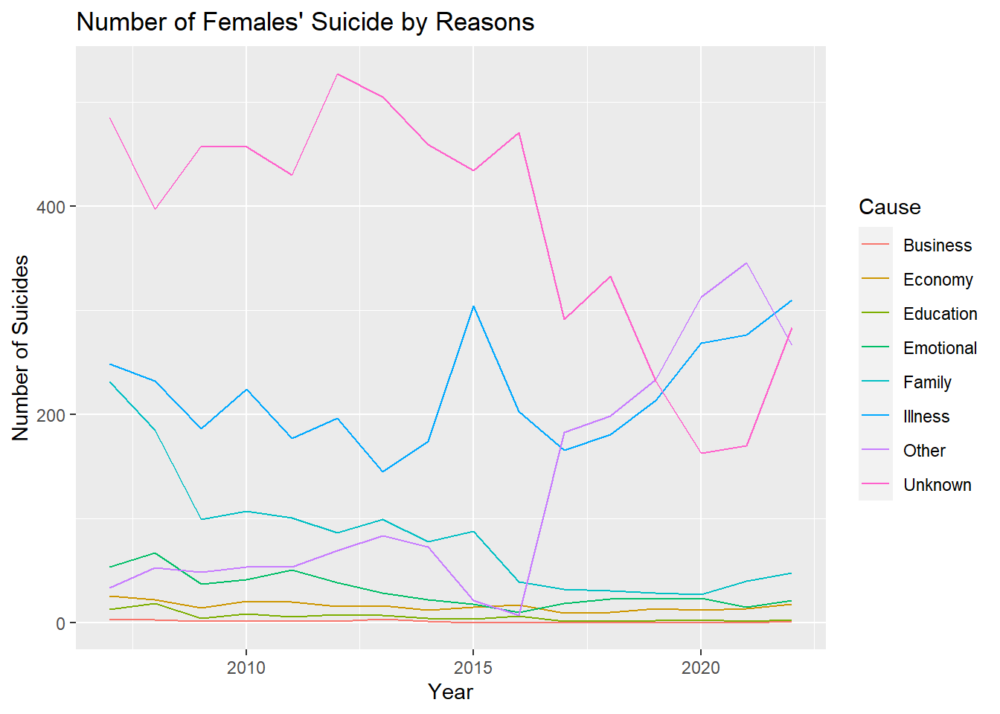

We did a study looking at how many people in Turkey took their own lives from 2007 to 2022. We wanted to understand if the increase in stress and the more news about suicide are making it seem like more people are doing it, or if there’s a real increase in suicides.
In our data set, we have details about when people did suicide, why they did it, how old they were, and if they were male or female. This data helps us see the patterns and changes in suicide rates over the twenty years. We can use this data to understand why people do this and how we can help them better. We took the data from TÜİK (Türkiye İstatistik Kurumu)
A striking revelation emerges as male suicides prove to be three times more prevalent than female suicides, underscoring a concerning gender disparity.
Furthermore, the primary cause of suicides is identified as illness, bringing attention to the crucial intersection of mental health and physical well-being.
Notably, teenagers exhibit a pronounced inclination towards suicide, signifying a pressing concern for the mental health of this demographic.
Overarching these findings is a troubling trend: the consistent increase in suicide numbers over the studied period.
The important things we learned from this study tell a strong story. It doesn’t just show important problems but also says we really need to do something about mental health issues in Turkey, and we need to do it quickly.
Finding the Suicide Rate Using Suicide and Population Datasets
We have data on the number of suicides between 2002 and 2022, but our population data is limited between 2007 and 2022. Since it is more logical to use suicide rate data, we will use data between 2007 and 2022.
We used the bar plot method to compare suicides by gender regardless of age and reason. You can find the graph and the code we used below.
Code
filtered_data_male <-filter(data, Sex =="Male", Age=="Total")male =sum(as.numeric(filtered_data_male$Total))filtered_data_female <-filter(data, Sex =="Female", Age=="Total")female =sum(as.numeric(filtered_data_female$Total))data1 <-c(male,female)barplot(data1, names.arg =c("Male","Female"), col ="skyblue", main ="Number of Suicides by Gender", xlab ="Sex", ylab ="Total")
Code
b1 <-filter(data,Sex=="Male",Age=="Total")b2 <-filter(data,Sex=="Female",Age=="Total")slices1 <-c(sum(as.numeric(b1$Total)),sum(as.numeric(b2$Total)))lbls <-c("Male","Female")pct <-round(slices1/sum(slices1)*100)lbls <-paste(lbls, pct)# add percents to labelslbls <-paste(lbls,"%",sep="") # ad % to labels
Code
pie(slices1,labels = lbls, col=rainbow(length(lbls)),main="Pie Chart of Gender")
-From this graph, we can observe that men are more prone to suicide compared to women.
Suicides by Age Groups
We used the bar plot method to compare suicides by age groups regardless of gender and reason. You can find the graph and the code we used below.
Code
filtered_data_1 <-filter(data,Age=="<15", Sex =="Total")filtered_data_2 <-filter(data,Age=="15-19", Sex =="Total")filtered_data_3 <-filter(data,Age=="20-24", Sex =="Total")filtered_data_4 <-filter(data,Age=="25-29", Sex =="Total")filtered_data_5 <-filter(data,Age=="30-34", Sex =="Total")filtered_data_6 <-filter(data,Age=="35-39", Sex =="Total")filtered_data_7 <-filter(data,Age=="40-44", Sex =="Total")filtered_data_8 <-filter(data,Age=="45-49", Sex =="Total")filtered_data_9 <-filter(data,Age=="50-54", Sex =="Total")filtered_data_10 <-filter(data,Age=="55-59", Sex =="Total")filtered_data_11 <-filter(data,Age=="60-64", Sex =="Total")filtered_data_12 <-filter(data,Age=="65-69", Sex =="Total")filtered_data_13 <-filter(data,Age=="75 +", Sex =="Total")age1 =sum(as.numeric(filtered_data_1$Total))age2 =sum(as.numeric(filtered_data_2$Total))age3 =sum(as.numeric(filtered_data_3$Total))age4 =sum(as.numeric(filtered_data_4$Total))age5 =sum(as.numeric(filtered_data_5$Total))age6 =sum(as.numeric(filtered_data_6$Total))age7 =sum(as.numeric(filtered_data_7$Total))age8 =sum(as.numeric(filtered_data_8$Total))age9 =sum(as.numeric(filtered_data_9$Total))age10 =sum(as.numeric(filtered_data_10$Total))age11 =sum(as.numeric(filtered_data_11$Total))age12 =sum(as.numeric(filtered_data_12$Total))age13 =sum(as.numeric(filtered_data_13$Total))data2 =c(age1,age2,age3,age4,age5,age6,age7,age8,age9,age10,age11,age12,age13)barplot(data2, names.arg =c("<15","15-19","20-24","25-29","30-34","35-39","40-44","45-49","50-54","55-59","60-64","65-69","75 +"), col ="red", main ="Number of Suicides by Age Group", xlab ="Age", ylab ="Total")

When looking at this graph, we observe that suicides are most common among young adults aged 20-24. We can say that as age progresses beyond 25, suicide rates tend to decrease. Another interesting result is that the age groups with the lowest suicide rates are children and the elderly.
Suicides by Year
We used the bar plot method to compare suicides by year regardless of gender, reason and age group. You can find the graph and the code we used below.
Code
ffiltered_data_6 <-filter(data,Year=="2007",Age=="Total", Sex =="Total")ffiltered_data_7 <-filter(data,Year=="2008",Age=="Total", Sex =="Total")ffiltered_data_8 <-filter(data,Year=="2009",Age=="Total", Sex =="Total")ffiltered_data_9 <-filter(data,Year=="2010",Age=="Total", Sex =="Total")ffiltered_data_10 <-filter(data,Year=="2011",Age=="Total", Sex =="Total")ffiltered_data_11 <-filter(data,Year=="2012",Age=="Total", Sex =="Total")ffiltered_data_12 <-filter(data,Year=="2013",Age=="Total", Sex =="Total")ffiltered_data_13 <-filter(data,Year=="2014",Age=="Total", Sex =="Total")ffiltered_data_14 <-filter(data,Year=="2015",Age=="Total", Sex =="Total")ffiltered_data_15 <-filter(data,Year=="2016",Age=="Total", Sex =="Total")ffiltered_data_16 <-filter(data,Year=="2017",Age=="Total", Sex =="Total")ffiltered_data_17 <-filter(data,Year=="2018",Age=="Total", Sex =="Total")ffiltered_data_18 <-filter(data,Year=="2019",Age=="Total", Sex =="Total")ffiltered_data_19 <-filter(data,Year=="2020",Age=="Total", Sex =="Total")ffiltered_data_20 <-filter(data,Year=="2021",Age=="Total", Sex =="Total")ffiltered_data_21 <-filter(data,Year=="2022",Age=="Total", Sex =="Total")year6 =sum(as.numeric(ffiltered_data_6$Total))year7 =sum(as.numeric(ffiltered_data_7$Total))year8 =sum(as.numeric(ffiltered_data_8$Total))year9 =sum(as.numeric(ffiltered_data_9$Total))year10 =sum(as.numeric(ffiltered_data_10$Total))year11 =sum(as.numeric(ffiltered_data_11$Total))year12 =sum(as.numeric(ffiltered_data_12$Total))year13 =sum(as.numeric(ffiltered_data_13$Total))year14 =sum(as.numeric(ffiltered_data_14$Total))year15 =sum(as.numeric(ffiltered_data_15$Total))year16 =sum(as.numeric(ffiltered_data_16$Total))year17 =sum(as.numeric(ffiltered_data_17$Total))year18 =sum(as.numeric(ffiltered_data_18$Total))year19 =sum(as.numeric(ffiltered_data_19$Total))year20 =sum(as.numeric(ffiltered_data_20$Total))year21 =sum(as.numeric(ffiltered_data_21$Total))
Code
data3 =c(year6,year7,year8,year9,year10,year11,year12,year13,year14,year15,year16,year17,year18,year19,year20,year21)barplot(data3, names.arg =c("2007","2008","2009","2010","2011","2012","2013","2014","2015","2016","2017","2018","2019","2020","2021","2022"), col ="yellow", main ="Number of Suicides by Year", xlab ="Year", ylab ="Total")
When looking at this graph, we observe that suicides are most common in 2021 and 2022.
Factors such as people entering social isolation, losing their jobs, and experiencing financial difficulties due to the pandemic have made the phenomenon of suicide more painful.
Suicides by Reason
We used the bar plot method to compare suicides by reason regardless of gender and age group. You can find the graph and the code we used below.
barplot(data4, names.arg =c("Illness","Family","Economy","Business","Emotional","Educational","Other","Unknown"), col ="brown", main ="Number of Suicides by Reason", xlab ="Suicide Reason", ylab ="Total",cex.names=0.72)
This line chart shows the change in the causes of suicide over the years.
Code
# Keep only 3 names a =filter(data,Age=="Total", Sex =="Total") a1 =data.frame(Year=a$Year,Total=a$Illness,Cause="Illness") a2 =data.frame(Year=a$Year,Total=a$Family,Cause="Family") a3 =data.frame(Year=a$Year,Total=a$Economy,Cause="Economy") a4 =data.frame(Year=a$Year,Total=a$Business,Cause="Business") a5 =data.frame(Year=a$Year,Total=a$Emotional,Cause="Emotional") a6 =data.frame(Year=a$Year,Total=a$Education,Cause="Education") a7 =data.frame(Year=a$Year,Total=a$Other,Cause="Other") a8 =data.frame(Year=a$Year,Total=a$Unknown,Cause="Unknown") cause =rbind(a1,a2,a3,a4,a5,a6,a7,a8,deparse.level =0)
Code
graph <- cause %>%filter(Cause %in%c("Illness","Family","Economy","Business","Emotional","Education","Other","Unknown")) b =as.numeric(cause$Total) c =ifelse(is.na(b),0,b) graph %>%ggplot( aes(x=Year, y=c, group=Cause, color=Cause)) +geom_line() +ylab("Number of Suicides") +ggtitle("Number of Suicides by Reasons")

We can say that while the number of suicides due to business and education has decreased over time, the number of other suicides has remained almost constant.
We used a pie chart to better analyze the ratios.
Code
# Pie Chart with Percentages#| codefold: true#| output: falseslices <-c(sum(ifelse(is.na(as.numeric(a$Illness)),0,as.numeric(a$Illness))),sum(ifelse(is.na(as.numeric(a$Family)),0,as.numeric(a$Family))) ,sum(ifelse(is.na(as.numeric(a$Economy)),0,as.numeric(a$Economy))),sum(ifelse(is.na(as.numeric(a$Business)),0,as.numeric(a$Business))),sum(ifelse(is.na(as.numeric(a$Emotional)),0,as.numeric(a$Emotional))),sum(ifelse(is.na(as.numeric(a$Education)),0,as.numeric(a$Education))),sum(ifelse(is.na(as.numeric(a$Other)),0,as.numeric(a$Other))),sum(ifelse(is.na(as.numeric(a$Unknown)),0,as.numeric(a$Unknown))))lbls <-c("Illness","Family","Economy","Business","Emotional","Education","Other","Unknown")pct <-round(slices/sum(slices)*100)lbls <-paste(lbls, pct)# add percents to labelslbls <-paste(lbls,"%",sep="") # ad % to labels
Code
pie(slices,lbls, col=rainbow(length(lbls)),main="Pie Chart of Suicide Reasons",cex=0.8)

As a result, we see that if we ignore the unknowns and others, the Illness has a huge dominance.
Suicides of Males by Reason
To obtain more meaningful results, we separated the data by gender.
We interpreted the reasons why men commit suicide with a line chart.
Code
a =filter(data,Age=="Total", Sex =="Male") a1 =data.frame(Year=a$Year,Total=a$Illness,Cause="Illness") a2 =data.frame(Year=a$Year,Total=a$Family,Cause="Family") a3 =data.frame(Year=a$Year,Total=a$Economy,Cause="Economy") a4 =data.frame(Year=a$Year,Total=a$Business,Cause="Business") a5 =data.frame(Year=a$Year,Total=a$Emotional,Cause="Emotional") a6 =data.frame(Year=a$Year,Total=a$Education,Cause="Education") a7 =data.frame(Year=a$Year,Total=a$Other,Cause="Other") a8 =data.frame(Year=a$Year,Total=a$Unknown,Cause="Unknown") cause =rbind(a1,a2,a3,a4,a5,a6,a7,a8,deparse.level =0) b =as.numeric(cause$Total) c =ifelse(is.na(b),0,b)
Code
graph <- cause %>%filter(Cause %in%c("Illness","Family","Economy","Business","Emotional","Education","Other","Unknown")) graph %>%ggplot( aes(x=Year, y=c, group=Cause, color=Cause)) +geom_line() +ylab("Number of Suicides") +ggtitle("Number of Males' Suicides by Reasons ")

Code
slices2 =c(sum(as.numeric(a1$Total)),sum(as.numeric(a2$Total)),sum(as.numeric(a3$Total)),sum(as.numeric(a4$Total)),sum(as.numeric(a5$Total)),sum(ifelse(is.na(as.numeric(a6$Total)),0,as.numeric(a6$Total))),sum(as.numeric(a7$Total)),sum(as.numeric(a8$Total)))name =c("Illness","Family","Economy","Business","Emotional","Education","Other","Unknown")lbls2 <- namepct <-round(slices2/sum(slices2)*100)lbls2 <-paste(lbls2, pct)# add percents to labelslbls2 <-paste(lbls2,"%",sep="") # ad % to labels
Code
par(mfrow=c(1,2)) pie(slices2,lbls2, col=rainbow(length(lbls2)),main="Pie Chart of Males' \n Suicide by Reasons",cex=0.8)pie(slices,lbls, col=rainbow(length(lbls)),main="Pie Chart of \n Suicide Reasons",cex=0.8)
Suicides of Females by Reason
Code
a =filter(data,Age=="Total", Sex =="Female") a1 =data.frame(Year=a$Year,Total=a$Illness,Cause="Illness") a2 =data.frame(Year=a$Year,Total=a$Family,Cause="Family") a3 =data.frame(Year=a$Year,Total=a$Economy,Cause="Economy") a4 =data.frame(Year=a$Year,Total=a$Business,Cause="Business") a5 =data.frame(Year=a$Year,Total=a$Emotional,Cause="Emotional") a6 =data.frame(Year=a$Year,Total=a$Education,Cause="Education") a7 =data.frame(Year=a$Year,Total=a$Other,Cause="Other") a8 =data.frame(Year=a$Year,Total=a$Unknown,Cause="Unknown") cause =rbind(a1,a2,a3,a4,a5,a6,a7,a8,deparse.level =0) b =as.numeric(cause$Total) c =ifelse(is.na(b),0,b)
Code
graph <- cause %>%filter(Cause %in%c("Illness","Family","Economy","Business","Emotional","Education","Other","Unknown")) graph %>%ggplot( aes(x=Year, y=c, group=Cause, color=Cause)) +geom_line() +ylab("Number of Suicides") +ggtitle("Number of Females' Suicide by Reasons")

Code
slices3 =c(sum(as.numeric(a1$Total)),sum(as.numeric(a2$Total)),sum(as.numeric(a3$Total)),sum(ifelse(is.na(as.numeric(a4$Total)),0,as.numeric(a4$Total))),sum(ifelse(is.na(as.numeric(a5$Total)),0,as.numeric(a5$Total))),sum(ifelse(is.na(as.numeric(a6$Total)),0,as.numeric(a6$Total))),sum(as.numeric(a7$Total)),sum(as.numeric(a8$Total)))name =c("Illness","Family","Economy","Business","Emotional","Education","Other","Unknown")lbls3 <- namepct <-round(slices3/sum(slices3)*100)lbls3 <-paste(lbls3, pct)# add percents to labelslbls3 <-paste(lbls3,"%",sep="") # ad % to labels
Code
par(mfrow=c(1,2)) pie(slices3,labels = lbls3, col=rainbow(length(lbls3)),main="Pie Chart of Females' \n Suicide by Reasons",cex=0.5)pie(slices,lbls, col=rainbow(length(lbls)),main="Pie Chart of \n Suicide Reasons",cex=0.5)
---title: "Analysis"format: html: code-tools: true code-fold: true---# Exploratory Data Analysis## Key Takeaways- We did a study looking at how many people in Turkey took their own lives from 2007 to 2022. We wanted to understand if the increase in stress and the more news about suicide are making it seem like more people are doing it, or if there's a real increase in suicides.- In our data set, we have details about when people did suicide, why they did it, how old they were, and if they were male or female. This data helps us see the patterns and changes in suicide rates over the twenty years. We can use this data to understand why people do this and how we can help them better. We took the data from TÜİK (Türkiye İstatistik Kurumu)- A striking revelation emerges as male suicides prove to be three times more prevalent than female suicides, underscoring a concerning gender disparity.- Furthermore, the primary cause of suicides is identified as illness, bringing attention to the crucial intersection of mental health and physical well-being.- Notably, teenagers exhibit a pronounced inclination towards suicide, signifying a pressing concern for the mental health of this demographic.- Overarching these findings is a troubling trend: the consistent increase in suicide numbers over the studied period.- The important things we learned from this study tell a strong story. It doesn't just show important problems but also says we really need to do something about mental health issues in Turkey, and we need to do it quickly.## Loading Libraries and Datasets```{r}#| output: falselibrary(tidyverse) library(dslabs)library(readxl)library(dplyr)library(ggplot2)library(viridis)library(hrbrthemes)data <-read_excel("C:/Users/kubil/Desktop/intihar.xls")save(data, file ="semicolon1.RData")nüfus <-read_excel("C:/Users/kubil/Desktop/nüfus.xlsx")save(nüfus, file ="semicolon2.RData")```## Finding the Suicide Rate Using Suicide and Population DatasetsWe have data on the number of suicides between 2002 and 2022, but our population data is limited between 2007 and 2022. Since it is more logical to use suicide rate data, we will use data between 2007 and 2022.```{r}data <-filter(data,Year >=2007)colnames(data) <-c("Year","Age","Sex","Total","Illness","Family","Economy","Business","Emotional","Education","Other","Unknown")nüfus <-filter(nüfus,Yıl >=2007,Düzey =="TÜRKİYE")a =0popu =sum(as.numeric(nüfus$Toplam))/length(nüfus$Toplam)for (i in1:16){ data1 <-filter(data, Year ==2023-i) data1$Total <- data1$Total/nüfus$Toplam[i]*popu data1$Illness <- data1$Illness/nüfus$Toplam[i]*popu data1$Family <- data1$Family/nüfus$Toplam[i]*popu data1$Economy <- data1$Economy/nüfus$Toplam[i]*popu data1$Business <- data1$Business/nüfus$Toplam[i]*popu data1$Emotional <- data1$Emotional/nüfus$Toplam[i]*popu data1$Education <- data1$Education/nüfus$Toplam[i]*popu data1$Other <- data1$Other/nüfus$Toplam[i]*popu data1$Unknown <- data1$Unknown/nüfus$Toplam[i]*popu a <-rbind(a,data1,deparse.level =0)}data =filter(a,Year !=0)```## **Suicides by Gender**We used the bar plot method to compare suicides by gender regardless of age and reason. You can find the graph and the code we used below.```{r}#| code-fold: truefiltered_data_male <-filter(data, Sex =="Male", Age=="Total")male =sum(as.numeric(filtered_data_male$Total))filtered_data_female <-filter(data, Sex =="Female", Age=="Total")female =sum(as.numeric(filtered_data_female$Total))data1 <-c(male,female)barplot(data1, names.arg =c("Male","Female"), col ="skyblue", main ="Number of Suicides by Gender", xlab ="Sex", ylab ="Total")``````{r}#| codefold: true#| output: falseb1 <-filter(data,Sex=="Male",Age=="Total")b2 <-filter(data,Sex=="Female",Age=="Total")slices1 <-c(sum(as.numeric(b1$Total)),sum(as.numeric(b2$Total)))lbls <-c("Male","Female")pct <-round(slices1/sum(slices1)*100)lbls <-paste(lbls, pct)# add percents to labelslbls <-paste(lbls,"%",sep="") # ad % to labels``````{r}#| codefold: truepie(slices1,labels = lbls, col=rainbow(length(lbls)),main="Pie Chart of Gender")```-From this graph, we can observe that **men are more prone to suicide compared to women**.## **Suicides by Age Groups**We used the bar plot method to compare suicides by age groups regardless of gender and reason. You can find the graph and the code we used below.```{r}#| code-fold: truefiltered_data_1 <-filter(data,Age=="<15", Sex =="Total")filtered_data_2 <-filter(data,Age=="15-19", Sex =="Total")filtered_data_3 <-filter(data,Age=="20-24", Sex =="Total")filtered_data_4 <-filter(data,Age=="25-29", Sex =="Total")filtered_data_5 <-filter(data,Age=="30-34", Sex =="Total")filtered_data_6 <-filter(data,Age=="35-39", Sex =="Total")filtered_data_7 <-filter(data,Age=="40-44", Sex =="Total")filtered_data_8 <-filter(data,Age=="45-49", Sex =="Total")filtered_data_9 <-filter(data,Age=="50-54", Sex =="Total")filtered_data_10 <-filter(data,Age=="55-59", Sex =="Total")filtered_data_11 <-filter(data,Age=="60-64", Sex =="Total")filtered_data_12 <-filter(data,Age=="65-69", Sex =="Total")filtered_data_13 <-filter(data,Age=="75 +", Sex =="Total")age1 =sum(as.numeric(filtered_data_1$Total))age2 =sum(as.numeric(filtered_data_2$Total))age3 =sum(as.numeric(filtered_data_3$Total))age4 =sum(as.numeric(filtered_data_4$Total))age5 =sum(as.numeric(filtered_data_5$Total))age6 =sum(as.numeric(filtered_data_6$Total))age7 =sum(as.numeric(filtered_data_7$Total))age8 =sum(as.numeric(filtered_data_8$Total))age9 =sum(as.numeric(filtered_data_9$Total))age10 =sum(as.numeric(filtered_data_10$Total))age11 =sum(as.numeric(filtered_data_11$Total))age12 =sum(as.numeric(filtered_data_12$Total))age13 =sum(as.numeric(filtered_data_13$Total))data2 =c(age1,age2,age3,age4,age5,age6,age7,age8,age9,age10,age11,age12,age13)barplot(data2, names.arg =c("<15","15-19","20-24","25-29","30-34","35-39","40-44","45-49","50-54","55-59","60-64","65-69","75 +"), col ="red", main ="Number of Suicides by Age Group", xlab ="Age", ylab ="Total")```When looking at this graph, we observe that **suicides are most common among young adults** aged 20-24. We can say that as age progresses beyond 25, suicide rates tend to decrease. Another interesting result is that the age groups with the **lowest suicide rates are children and the elderly.**## **Suicides by Year**We used the bar plot method to compare suicides by year regardless of gender, reason and age group. You can find the graph and the code we used below.```{r}#| code-fold: true#| output: falseffiltered_data_6 <-filter(data,Year=="2007",Age=="Total", Sex =="Total")ffiltered_data_7 <-filter(data,Year=="2008",Age=="Total", Sex =="Total")ffiltered_data_8 <-filter(data,Year=="2009",Age=="Total", Sex =="Total")ffiltered_data_9 <-filter(data,Year=="2010",Age=="Total", Sex =="Total")ffiltered_data_10 <-filter(data,Year=="2011",Age=="Total", Sex =="Total")ffiltered_data_11 <-filter(data,Year=="2012",Age=="Total", Sex =="Total")ffiltered_data_12 <-filter(data,Year=="2013",Age=="Total", Sex =="Total")ffiltered_data_13 <-filter(data,Year=="2014",Age=="Total", Sex =="Total")ffiltered_data_14 <-filter(data,Year=="2015",Age=="Total", Sex =="Total")ffiltered_data_15 <-filter(data,Year=="2016",Age=="Total", Sex =="Total")ffiltered_data_16 <-filter(data,Year=="2017",Age=="Total", Sex =="Total")ffiltered_data_17 <-filter(data,Year=="2018",Age=="Total", Sex =="Total")ffiltered_data_18 <-filter(data,Year=="2019",Age=="Total", Sex =="Total")ffiltered_data_19 <-filter(data,Year=="2020",Age=="Total", Sex =="Total")ffiltered_data_20 <-filter(data,Year=="2021",Age=="Total", Sex =="Total")ffiltered_data_21 <-filter(data,Year=="2022",Age=="Total", Sex =="Total")year6 =sum(as.numeric(ffiltered_data_6$Total))year7 =sum(as.numeric(ffiltered_data_7$Total))year8 =sum(as.numeric(ffiltered_data_8$Total))year9 =sum(as.numeric(ffiltered_data_9$Total))year10 =sum(as.numeric(ffiltered_data_10$Total))year11 =sum(as.numeric(ffiltered_data_11$Total))year12 =sum(as.numeric(ffiltered_data_12$Total))year13 =sum(as.numeric(ffiltered_data_13$Total))year14 =sum(as.numeric(ffiltered_data_14$Total))year15 =sum(as.numeric(ffiltered_data_15$Total))year16 =sum(as.numeric(ffiltered_data_16$Total))year17 =sum(as.numeric(ffiltered_data_17$Total))year18 =sum(as.numeric(ffiltered_data_18$Total))year19 =sum(as.numeric(ffiltered_data_19$Total))year20 =sum(as.numeric(ffiltered_data_20$Total))year21 =sum(as.numeric(ffiltered_data_21$Total))``````{r}#| code-fold: truedata3 =c(year6,year7,year8,year9,year10,year11,year12,year13,year14,year15,year16,year17,year18,year19,year20,year21)barplot(data3, names.arg =c("2007","2008","2009","2010","2011","2012","2013","2014","2015","2016","2017","2018","2019","2020","2021","2022"), col ="yellow", main ="Number of Suicides by Year", xlab ="Year", ylab ="Total")```When looking at this graph, we observe that **suicides are most common in 2021 and 2022**.Factors such as people entering social isolation, losing their jobs, and experiencing financial difficulties due to the pandemic have made the phenomenon of suicide more painful.## **Suicides by Reason**We used the bar plot method to compare suicides by reason regardless of gender and age group. You can find the graph and the code we used below.```{r}#| code-fold: true#| output: falsefffiltered_data_1 <-filter(data,Age =="Total", Sex =="Total")cause1 =sum(as.numeric(fffiltered_data_1$Illness))cause2 =sum(as.numeric(fffiltered_data_1$Family))cause3 =sum(as.numeric(fffiltered_data_1$Economy))cause4 =sum(as.numeric(fffiltered_data_1$Business))cause5 =sum(as.numeric(fffiltered_data_1$Emotional))cause6 =sum(as.numeric(fffiltered_data_1$Education))cause7 =sum(as.numeric(fffiltered_data_1$Other))unknown <-ifelse(is.na(as.numeric(fffiltered_data_1$Unknown)),0,as.numeric(fffiltered_data_1$Unknown))cause8 =sum(unknown)data4 =c(cause1,cause2,cause3,cause4,cause5,cause6,cause7,cause8)``````{r}#| code-fold: truebarplot(data4, names.arg =c("Illness","Family","Economy","Business","Emotional","Educational","Other","Unknown"), col ="brown", main ="Number of Suicides by Reason", xlab ="Suicide Reason", ylab ="Total",cex.names=0.72)```This line chart shows the change in the causes of suicide over the years.```{r}#| codefold: true#| output: false# Keep only 3 names a =filter(data,Age=="Total", Sex =="Total") a1 =data.frame(Year=a$Year,Total=a$Illness,Cause="Illness") a2 =data.frame(Year=a$Year,Total=a$Family,Cause="Family") a3 =data.frame(Year=a$Year,Total=a$Economy,Cause="Economy") a4 =data.frame(Year=a$Year,Total=a$Business,Cause="Business") a5 =data.frame(Year=a$Year,Total=a$Emotional,Cause="Emotional") a6 =data.frame(Year=a$Year,Total=a$Education,Cause="Education") a7 =data.frame(Year=a$Year,Total=a$Other,Cause="Other") a8 =data.frame(Year=a$Year,Total=a$Unknown,Cause="Unknown") cause =rbind(a1,a2,a3,a4,a5,a6,a7,a8,deparse.level =0)``````{r}#| codefold: truegraph <- cause %>%filter(Cause %in%c("Illness","Family","Economy","Business","Emotional","Education","Other","Unknown")) b =as.numeric(cause$Total) c =ifelse(is.na(b),0,b) graph %>%ggplot( aes(x=Year, y=c, group=Cause, color=Cause)) +geom_line() +ylab("Number of Suicides") +ggtitle("Number of Suicides by Reasons")```We can say that while the number of suicides due to business and education has decreased over time, the number of other suicides has remained almost constant.We used a pie chart to better analyze the ratios.```{r}# Pie Chart with Percentages#| codefold: true#| output: falseslices <-c(sum(ifelse(is.na(as.numeric(a$Illness)),0,as.numeric(a$Illness))),sum(ifelse(is.na(as.numeric(a$Family)),0,as.numeric(a$Family))) ,sum(ifelse(is.na(as.numeric(a$Economy)),0,as.numeric(a$Economy))),sum(ifelse(is.na(as.numeric(a$Business)),0,as.numeric(a$Business))),sum(ifelse(is.na(as.numeric(a$Emotional)),0,as.numeric(a$Emotional))),sum(ifelse(is.na(as.numeric(a$Education)),0,as.numeric(a$Education))),sum(ifelse(is.na(as.numeric(a$Other)),0,as.numeric(a$Other))),sum(ifelse(is.na(as.numeric(a$Unknown)),0,as.numeric(a$Unknown))))lbls <-c("Illness","Family","Economy","Business","Emotional","Education","Other","Unknown")pct <-round(slices/sum(slices)*100)lbls <-paste(lbls, pct)# add percents to labelslbls <-paste(lbls,"%",sep="") # ad % to labels``````{r}#| codefold: truepie(slices,lbls, col=rainbow(length(lbls)),main="Pie Chart of Suicide Reasons",cex=0.8)```As a result, we see that if we ignore the unknowns and others, the Illness has a huge dominance.### **Suicides of Males by Reason**To obtain more meaningful results, we separated the data by gender.We interpreted the reasons why men commit suicide with a line chart.```{r}#| codefold: true#| output: false a =filter(data,Age=="Total", Sex =="Male") a1 =data.frame(Year=a$Year,Total=a$Illness,Cause="Illness") a2 =data.frame(Year=a$Year,Total=a$Family,Cause="Family") a3 =data.frame(Year=a$Year,Total=a$Economy,Cause="Economy") a4 =data.frame(Year=a$Year,Total=a$Business,Cause="Business") a5 =data.frame(Year=a$Year,Total=a$Emotional,Cause="Emotional") a6 =data.frame(Year=a$Year,Total=a$Education,Cause="Education") a7 =data.frame(Year=a$Year,Total=a$Other,Cause="Other") a8 =data.frame(Year=a$Year,Total=a$Unknown,Cause="Unknown") cause =rbind(a1,a2,a3,a4,a5,a6,a7,a8,deparse.level =0) b =as.numeric(cause$Total) c =ifelse(is.na(b),0,b)``````{r}#| codefold: truegraph <- cause %>%filter(Cause %in%c("Illness","Family","Economy","Business","Emotional","Education","Other","Unknown")) graph %>%ggplot( aes(x=Year, y=c, group=Cause, color=Cause)) +geom_line() +ylab("Number of Suicides") +ggtitle("Number of Males' Suicides by Reasons ")``````{r}#| codefold: true#| output: falseslices2 =c(sum(as.numeric(a1$Total)),sum(as.numeric(a2$Total)),sum(as.numeric(a3$Total)),sum(as.numeric(a4$Total)),sum(as.numeric(a5$Total)),sum(ifelse(is.na(as.numeric(a6$Total)),0,as.numeric(a6$Total))),sum(as.numeric(a7$Total)),sum(as.numeric(a8$Total)))name =c("Illness","Family","Economy","Business","Emotional","Education","Other","Unknown")lbls2 <- namepct <-round(slices2/sum(slices2)*100)lbls2 <-paste(lbls2, pct)# add percents to labelslbls2 <-paste(lbls2,"%",sep="") # ad % to labels``````{r}#| codefold: truepar(mfrow=c(1,2)) pie(slices2,lbls2, col=rainbow(length(lbls2)),main="Pie Chart of Males' \n Suicide by Reasons",cex=0.8)pie(slices,lbls, col=rainbow(length(lbls)),main="Pie Chart of \n Suicide Reasons",cex=0.8)```### **Suicides of Females by Reason**```{r}#| codefold: true#| output: false a =filter(data,Age=="Total", Sex =="Female") a1 =data.frame(Year=a$Year,Total=a$Illness,Cause="Illness") a2 =data.frame(Year=a$Year,Total=a$Family,Cause="Family") a3 =data.frame(Year=a$Year,Total=a$Economy,Cause="Economy") a4 =data.frame(Year=a$Year,Total=a$Business,Cause="Business") a5 =data.frame(Year=a$Year,Total=a$Emotional,Cause="Emotional") a6 =data.frame(Year=a$Year,Total=a$Education,Cause="Education") a7 =data.frame(Year=a$Year,Total=a$Other,Cause="Other") a8 =data.frame(Year=a$Year,Total=a$Unknown,Cause="Unknown") cause =rbind(a1,a2,a3,a4,a5,a6,a7,a8,deparse.level =0) b =as.numeric(cause$Total) c =ifelse(is.na(b),0,b)``````{r}#| codefold: truegraph <- cause %>%filter(Cause %in%c("Illness","Family","Economy","Business","Emotional","Education","Other","Unknown")) graph %>%ggplot( aes(x=Year, y=c, group=Cause, color=Cause)) +geom_line() +ylab("Number of Suicides") +ggtitle("Number of Females' Suicide by Reasons")``````{r}#| codefold: true#| output: falseslices3 =c(sum(as.numeric(a1$Total)),sum(as.numeric(a2$Total)),sum(as.numeric(a3$Total)),sum(ifelse(is.na(as.numeric(a4$Total)),0,as.numeric(a4$Total))),sum(ifelse(is.na(as.numeric(a5$Total)),0,as.numeric(a5$Total))),sum(ifelse(is.na(as.numeric(a6$Total)),0,as.numeric(a6$Total))),sum(as.numeric(a7$Total)),sum(as.numeric(a8$Total)))name =c("Illness","Family","Economy","Business","Emotional","Education","Other","Unknown")lbls3 <- namepct <-round(slices3/sum(slices3)*100)lbls3 <-paste(lbls3, pct)# add percents to labelslbls3 <-paste(lbls3,"%",sep="") # ad % to labels``````{r}#| codefold: truepar(mfrow=c(1,2)) pie(slices3,labels = lbls3, col=rainbow(length(lbls3)),main="Pie Chart of Females' \n Suicide by Reasons",cex=0.5)pie(slices,lbls, col=rainbow(length(lbls)),main="Pie Chart of \n Suicide Reasons",cex=0.5)```